Find your jobs on the phone, start and end the work day, read the map, tap Start Navigating, and start and finish repairs.
This guide is only about the RepairDesk phone app. An Administrator creates your account and gives you the app, a username, and a temporary password. Change the password from Account after your first sign-in. Allow location when the phone asks. The job still opens if GPS is off.
An Administrator creates your Technician account and gives you the RepairDesk app (APK file or install link), your username, and a temporary password.
You will get these details from the Admin. Do not invent a login and do not use the Register link on the sign-in screen — that is for customers. If you cannot sign in, ask the Admin to check that your account is Active and that they sent the right username.
| Field | Value |
|---|---|
| App | Provided by your Administrator |
| Username | Provided by your Administrator |
| Temporary password | Provided by your Administrator |
| Role | Technician |
The first sign-in after the server has been idle can take up to a minute. If it looks stuck, wait and try once more.
Allow location when the phone asks. Opening a job then shares one position so the shop can estimate travel time. The job still opens if you deny location or the GPS fix is weak.
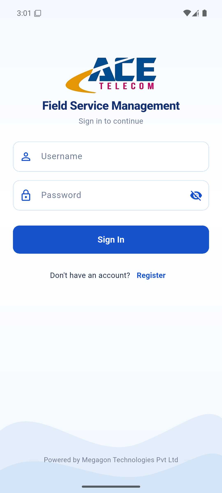
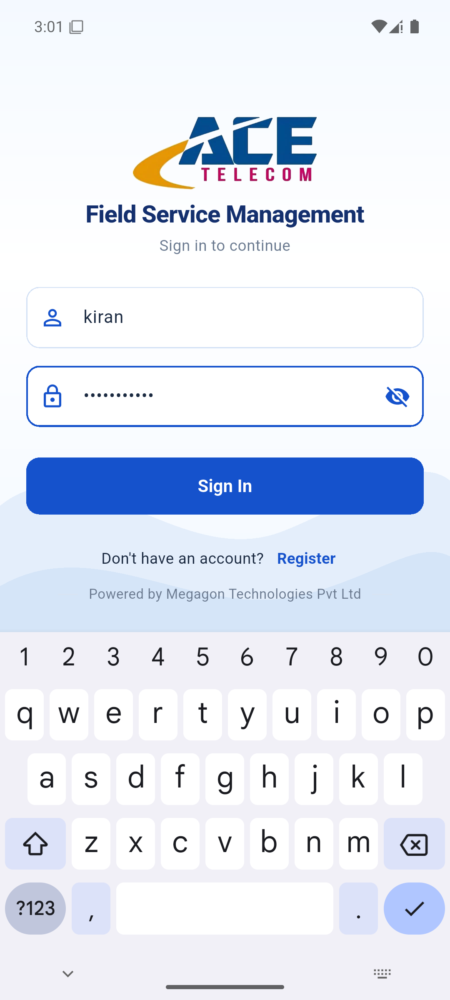
After your first sign-in, change the temporary password (see section 11).
You land on My work. The line under it confirms your role: Role: TECHNICIAN — jobs and appointments assigned to you.
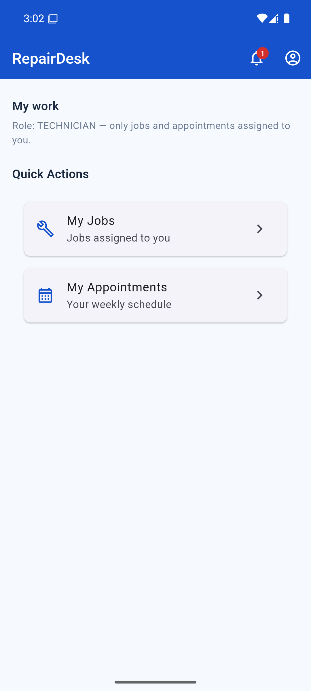
| Item | What it does |
|---|---|
| My Jobs | Jobs assigned to you |
| My Appointments | Your weekly schedule |
| Bell icon (top right) | Notifications; the red badge shows how many are unread |
| Person icon (top right) | Your account, password, and Sign Out |
Your home screen has My Jobs and My Appointments. You do not see Locations, Attendance, or Office location. While Attendance is off, those two tiles are the whole home screen. While an administrator has turned Attendance on, a Work day card sits above them.
| You can | You cannot (Staff or Admin does it) |
|---|---|
| See jobs assigned to you | Create a walk-in / phone request |
| See the map and address on the job | Move the job pin. You do not see Edit |
| Tap Start Navigating and follow the route in Google Maps | Search for a place, paste a Maps link, or drag the pin |
| Start, pause for parts, and complete a repair | Assign or unassign a technician |
| Add internal notes and bench photos | Schedule or reschedule a visit |
| See visits booked for you | Cancel a job |
| Share one position by opening the job | See the Locations map |
| Start and end the work day when Attendance is on | See other technicians’ days, turn Attendance on, or open Office location |
If My Jobs is empty, nothing is assigned to you yet. Ask Staff or an Admin to assign the job.
The Work day card is on My work only while an administrator has turned Attendance on. While it is off, home stays My Jobs and My Appointments.
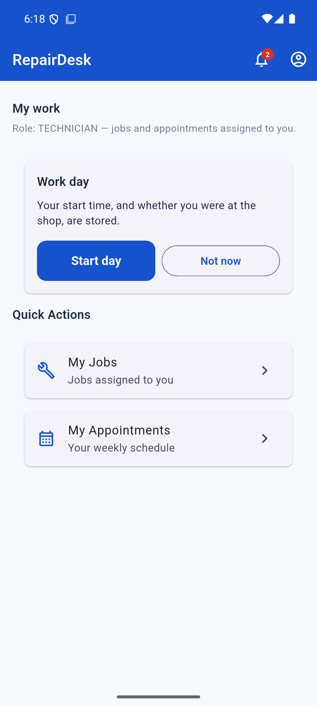
The card says: Your start time, and whether you were at the shop, are stored.
A fix is clear when its accuracy is no wider than the shop radius.
| What the phone finds | What happens |
|---|---|
| A clear fix at the shop | The day starts. The card says On duty since a time, and Start flag: Inside shop |
| A clear fix away from the shop | The day is not saved. The card says how many metres you are from the shop. If the shop allows a start outside the shop, the day starts and the flag is Outside shop |
| No fix, a fix too wide to trust, or no shop pin | The day still starts. The flag is Location missing or Location uncertain |
| A mocked location | The day still starts. The flag is Mocked location |
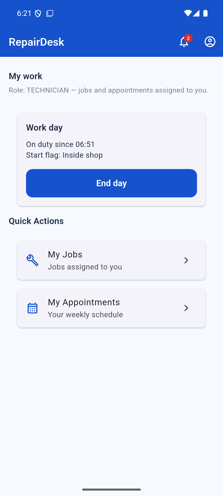
End day closes the day, including away from the shop. The card then says Ended, the start and end times, and Manual. A second Start day on the same India date shows the day already saved. It does not open a second day.
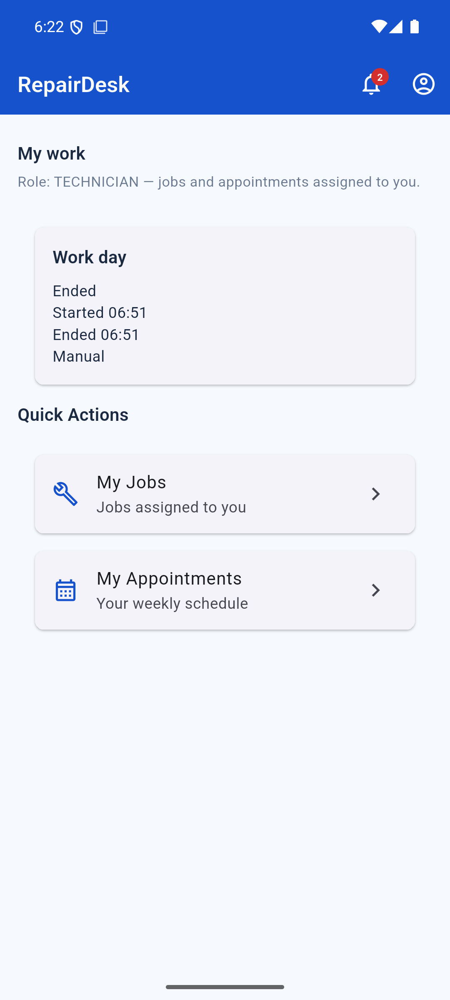
If you are still on duty at the shop’s end-of-day time (19:00 unless the office changed it), the day closes by itself. The card says Auto-ended. You get one notification. The job stays as it is.
Start Repair, opening a job, and Start Navigating do not wait for a started day.
Tap My Jobs. You see only your assignments.
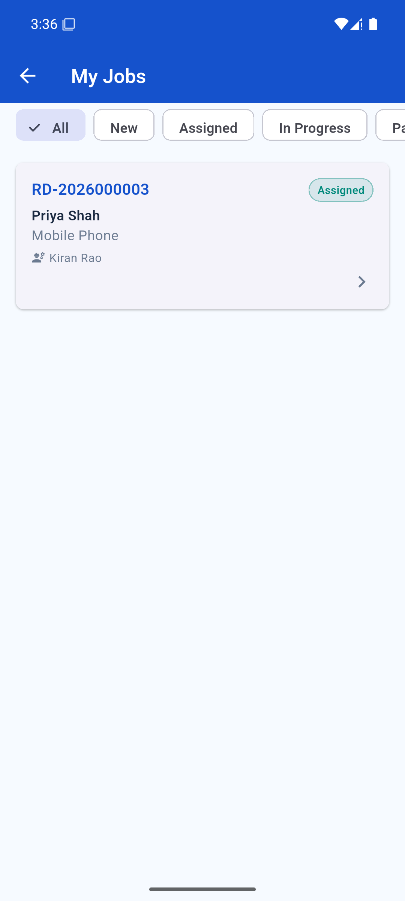
RD-2026000001), status, customer, device category, and your nameThe same reference number follows the repair from the customer's request to the finished job.
The Job Detail screen shows the device and customer contact, the issue, who it is assigned to, your actions, internal notes, customer photos, and attachments. Scroll down for the map (section 6).
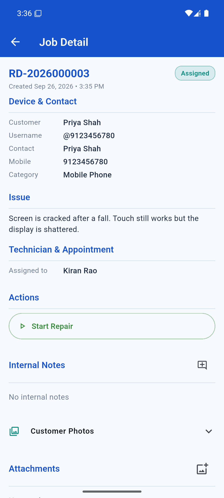
Booking or moving a visit is done by Staff or Admin. If you need one, ask them.
When the job is Assigned or Scheduled:
The job moves to In Progress, a short Start Repair — done message appears, and the customer may be notified.
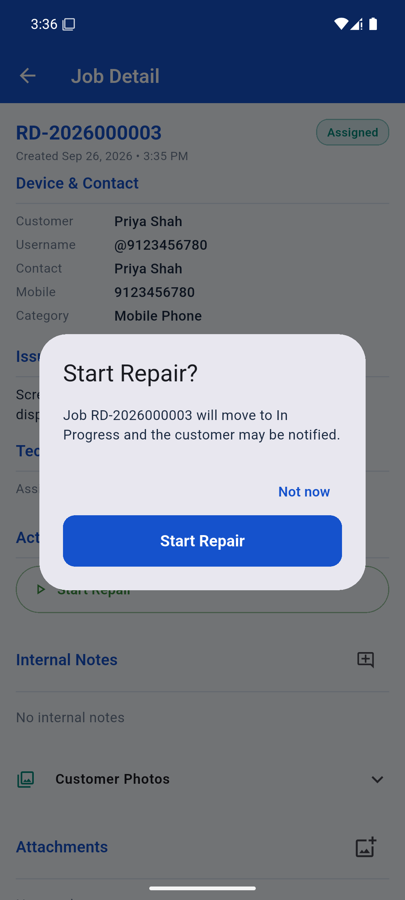
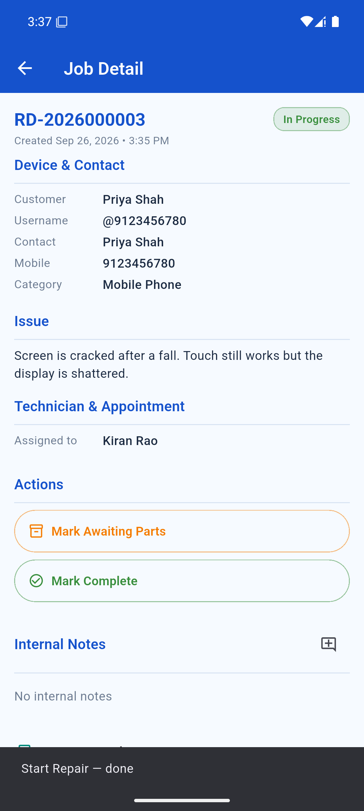
| Action | When |
|---|---|
| Mark Awaiting Parts | You cannot finish until a part arrives |
| Resume | Shown while the job is Awaiting Parts — tap it when the part is in |
| Mark Complete | The repair is done — enter a short resolution summary |
If a job should be cancelled, tell Staff — only Staff or Admin can cancel a job.
Notes are for the shop only — the customer never sees them. They are permanent and attributed to you.
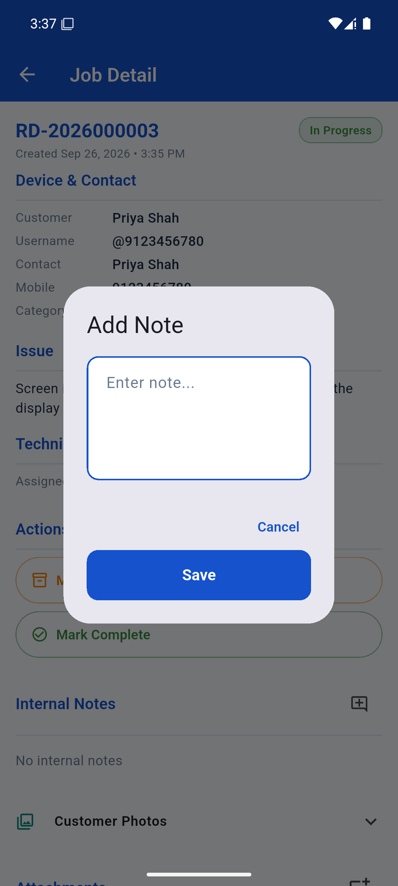
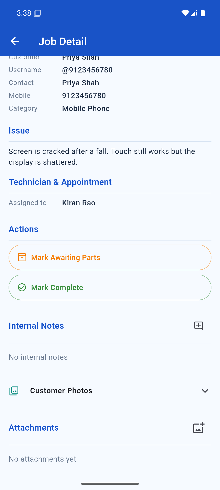
Scroll the job until the map appears. It sits above the written address. You follow this pin. You do not type a new address on the job.
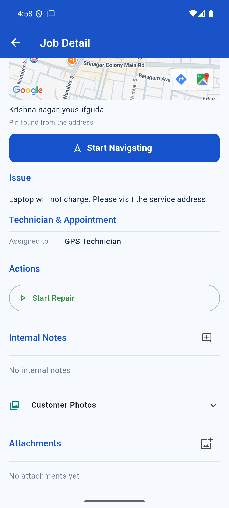
On that part of the screen you see a map with one pin, the address Staff or an Admin saved, a short line that says how the pin was chosen, and a blue Start Navigating button.
| Line under the address | Meaning |
|---|---|
| Pin found from the address | Someone searched or used Find on map when they saved the job |
| Pin placed on the map | Someone dragged the pin |
| Pin from the customer’s location link | Someone pasted the Maps link the customer sent |
| No address yet | A visit address has not been saved. Ask the shop before you leave |
You do not see Edit. You cannot search, paste a link, or drag the pin. If the pin is the wrong door, call the shop and ask them to move it, then open the job again. A photo of a map in a chat is not a pin.
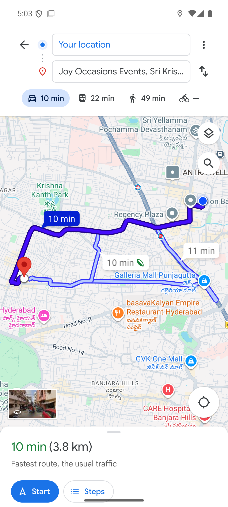
The name in the destination box is Google’s name for that pin. It can be a nearby shop or colony name. It is still the pin saved on the job. The route runs from the blue dot (you) to the red pin (the visit).
If Google Maps is not installed, the same directions open in the phone’s browser. The destination is still the saved pin.
If Maps asks you to choose a start, location is off for Google Maps. Allow location for Maps, or pick a start yourself. RepairDesk still opens the job if its own location permission is denied.
The first time Maps opens it may offer to sign in (“Take the shortcut”). You can skip that. The route works without a Google sign-in.
Opening an assigned job is what shares your position for the shop’s Locations map. That share is separate from the work day. There is no separate “share location” button.
If the fix fails or location is off, the job stays usable. The shop then estimates travel from the office instead of from you.
You only appear on jobs assigned to you. You do not see other technicians, and you do not see office settings.
From home, tap My Appointments. This is your weekly schedule; use the arrows at the top to move between weeks. You only see visits booked for you. Staff book those from the job.
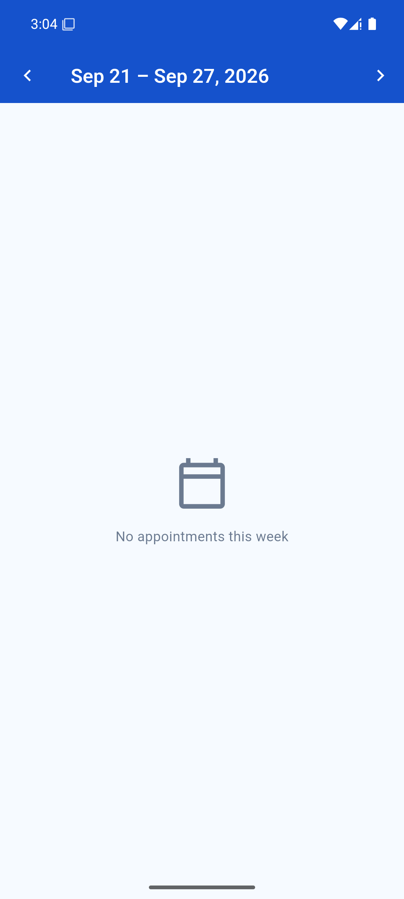
No appointments this week means nothing is scheduled for you yet. The job can still appear under My Jobs — Staff may assign you before they book a slot.
Tap the bell on the home screen. You are notified when a job is assigned to you and when something changes on your jobs. Tap a notification to open the job; tap Mark all read to clear the badge.
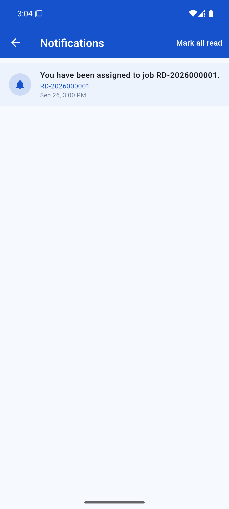
Tap the person icon on the home screen to open Account. It shows your name, username, role, and mobile number.
Do this right after your first sign-in, so only you know your password.
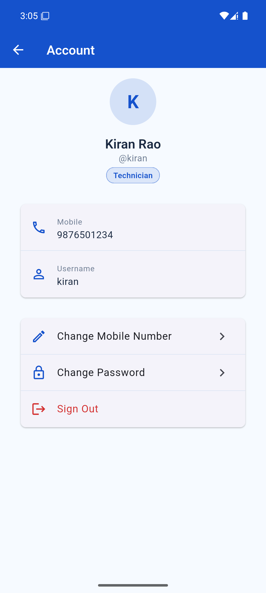
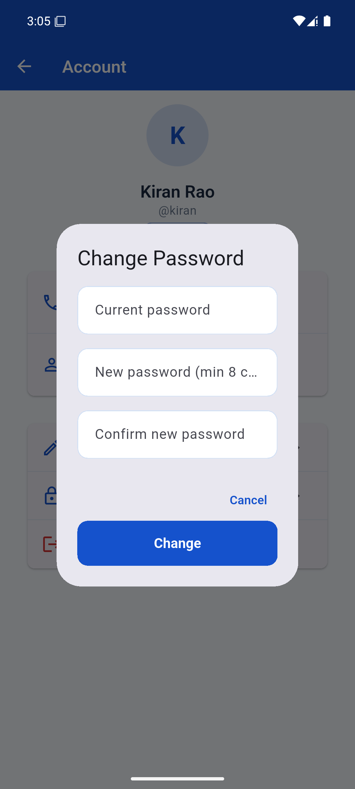
If you forget your password, ask the Admin to reset it. Sign Out is at the bottom of the Account screen — sign out if you share the phone.
| Item | Where |
|---|---|
| Username and password | From your Administrator |
| After first sign-in | Account → Change Password |
| Forgotten password | Ask the Admin to reset it |
| Location permission | Allow it. The job still opens if GPS is off |
| Your jobs | Home → My Jobs |
| Map and address | On the job, above Start Repair |
| Start navigation | Job → Start Navigating, then Start in Google Maps |
| Wrong door | Ask the shop to move the pin. You cannot move it |
| So the shop can see you on the map | Open the job with location allowed |
| Work day | Home, when Attendance is on → Start day, then End day |
| Start work | Job → Start Repair, then confirm |
| Waiting on parts | Job → Mark Awaiting Parts, later Resume |
| Finish | Job → Mark Complete |
| Notes | Job → note icon next to Internal Notes |
| Bench photos | Job → Attachments → add-photo icon |
| Your schedule | Home → My Appointments |
| Alerts | Home → bell icon |
| Create request / assign / schedule / cancel / move the pin | Staff or Admin — not on your app |
| Attendance list and the Attendance switch | Staff or Admin. You only see your own Work day card, and only while Attendance is on |